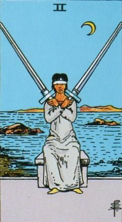
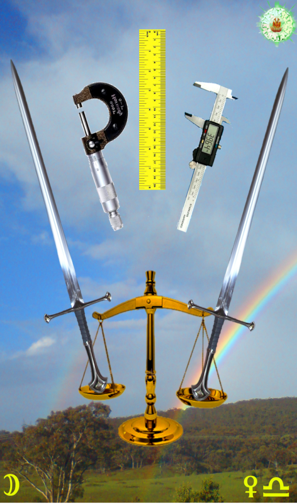
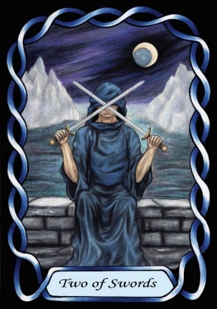

Two of Swords



Sign |
|
Seven: Relationships |
|
Sign Ruler |
|
Element |
Air - interaction |
Modality |
|
Symbol |
Scales |
Decan |
|
Decan Ruler |
|
Time |
Sep 25 - Oct 4 |
The Perfectionist Libra I
An Apprentice in relationships is naïve, and confused by the actions and attitudes of others. Her social skills are very poor at the beginning, but improve during her lifetime. Being ruled by Venus she expects beauty and perfection in the world, but the erratic lunar nature of others as they oscillate in mood and inconstancy confuses her. She cannot understand why people are selfish and lazy, rather than work together to create a beautiful life for all. Instead, she may turn her attention to physical perfection which can be analysed and controlled. She must learn social skills and acceptance and understanding of others in order to be happy.
Goldschneider Personology
Being perfectionists, Libra Ones can be very demanding, both on themselves, and on others. This can stress others. They need to understand that there are other issues besides producing perfection. They are often good with technology, but need to learn to stop fiddling with things when they are “good enough”. The Lunar influence can lead to oscillation between extremes.
Waite RWS Imagery
A person weighs the differences between Swords as a metaphor for people. She is unable to see their differences, and yet they behave differently.
Pymander Imagery
The instruments of measurement, and hence perfection.
Summary
The Swords represents the struggle to balance perfectionism and harmony in relationships, navigating inner conflict, social dynamics, and emotional intelligence.